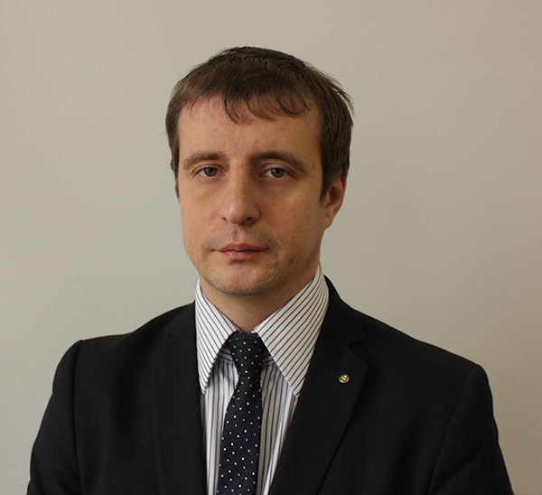
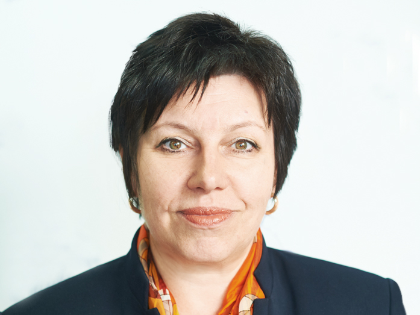
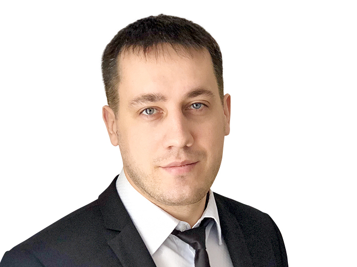

![1](https://vkontakte.ru/share.php?url=http%3A%2F%2Fwww.dk.ru%2Flanding%2Fglobalnoe-obrazovanie&title=%D0%93%D0%BB%D0%BE%D0%B1%D0%B0%D0%BB%D1%8C%D0%BD%D0%BE%D0%B5%20%D0%BE%D0%B1%D1%80%D0%B0%D0%B7%D0%BE%D0%B2%D0%B0%D0%BD%D0%B8%D0%B5%3A%20%D1%8D%D1%84%D1%84%D0%B5%D0%BA%D1%82%D0%B8%D0%B2%D0%BD%D0%BE%D1%81%D1%82%D1%8C%20%D0%B1%D0%B8%D0%B7%D0%BD%D0%B5%D1%81-%D1%88%D0%BA%D0%BE%D0%BB&description=%D0%9A%D0%B0%D0%BA%20%D0%BE%D0%B1%D1%83%D1%87%D0%B5%D0%BD%D0%B8%D0%B5%20%D0%BF%D0%BE%D0%BC%D0%BE%D0%B3%D0%BB%D0%BE%20%D0%BF%D0%BE%D1%81%D1%82%D1%80%D0%BE%D0%B8%D1%82%D1%8C%20%D0%BA%D0%B0%D1%80%D1%8C%D0%B5%D1%80%D1%83%2C%20%D0%B7%D0%B0%D0%BF%D1%83%D1%81%D1%82%D0%B8%D1%82%D1%8C%20%D1%81%D0%BE%D0%B1%D1%81%D1%82%D0%B2%D0%B5%D0%BD%D0%BD%D1%8B%D0%B9%20%D0%B1%D0%B8%D0%B7%D0%BD%D0%B5%D1%81%20%D0%B8%20%D0%B2%D1%8B%D0%B2%D0%B5%D1%81%D1%82%D0%B8%20%D0%BA%D0%BE%D0%BC%D0%BF%D0%B0%D0%BD%D0%B8%D1%8E%20%D0%BD%D0%B0%20%D0%B7%D0%B0%D1%80%D1%83%D0%B1%D0%B5%D0%B6%D0%BD%D1%8B%D0%B9%20%D1%80%D1%8B%D0%BD%D0%BE%D0%BA%20%E2%80%93%20%D0%B2%D1%8B%D0%BF%D1%83%D1%81%D0%BA%D0%BD%D0%B8%D0%BA%D0%B8%20%D1%80%D0%BE%D1%81%D1%81%D0%B8%D0%B9%D1%81%D0%BA%D0%B8%D1%85%20%D0%B1%D0%B8%D0%B7%D0%BD%D0%B5%D1%81-%D1%88%D0%BA%D0%BE%D0%BB%20%D0%BF%D0%BE%D0%B4%D0%B5%D0%BB%D0%B8%D0%BB%D0%B8%D1%81%D1%8C%20%D0%BE%D0%BF%D1%8B%D1%82%D0%BE%D0%BC.&image=http%3A%2F%2Fwww.dk.ru%2Fsystem%2Fimages%2Flandingblock%2F000%2F844%2F340_original.jpg&noparse=true){kind=link}
![13](https://connect.ok.ru/offer?url=http%3A%2F%2Fwww.dk.ru%2Flanding%2Fglobalnoe-obrazovanie&title=%D0%93%D0%BB%D0%BE%D0%B1%D0%B0%D0%BB%D1%8C%D0%BD%D0%BE%D0%B5%20%D0%BE%D0%B1%D1%80%D0%B0%D0%B7%D0%BE%D0%B2%D0%B0%D0%BD%D0%B8%D0%B5%3A%20%D1%8D%D1%84%D1%84%D0%B5%D0%BA%D1%82%D0%B8%D0%B2%D0%BD%D0%BE%D1%81%D1%82%D1%8C%20%D0%B1%D0%B8%D0%B7%D0%BD%D0%B5%D1%81-%D1%88%D0%BA%D0%BE%D0%BB&description=%D0%9A%D0%B0%D0%BA%20%D0%BE%D0%B1%D1%83%D1%87%D0%B5%D0%BD%D0%B8%D0%B5%20%D0%BF%D0%BE%D0%BC%D0%BE%D0%B3%D0%BB%D0%BE%20%D0%BF%D0%BE%D1%81%D1%82%D1%80%D0%BE%D0%B8%D1%82%D1%8C%20%D0%BA%D0%B0%D1%80%D1%8C%D0%B5%D1%80%D1%83%2C%20%D0%B7%D0%B0%D0%BF%D1%83%D1%81%D1%82%D0%B8%D1%82%D1%8C%20%D1%81%D0%BE%D0%B1%D1%81%D1%82%D0%B2%D0%B5%D0%BD%D0%BD%D1%8B%D0%B9%20%D0%B1%D0%B8%D0%B7%D0%BD%D0%B5%D1%81%20%D0%B8%20%D0%B2%D1%8B%D0%B2%D0%B5%D1%81%D1%82%D0%B8%20%D0%BA%D0%BE%D0%BC%D0%BF%D0%B0%D0%BD%D0%B8%D1%8E%20%D0%BD%D0%B0%20%D0%B7%D0%B0%D1%80%D1%83%D0%B1%D0%B5%D0%B6%D0%BD%D1%8B%D0%B9%20%D1%80%D1%8B%D0%BD%D0%BE%D0%BA%20%E2%80%93%20%D0%B2%D1%8B%D0%BF%D1%83%D1%81%D0%BA%D0%BD%D0%B8%D0%BA%D0%B8%20%D1%80%D0%BE%D1%81%D1%81%D0%B8%D0%B9%D1%81%D0%BA%D0%B8%D1%85%20%D0%B1%D0%B8%D0%B7%D0%BD%D0%B5%D1%81-%D1%88%D0%BA%D0%BE%D0%BB%20%D0%BF%D0%BE%D0%B4%D0%B5%D0%BB%D0%B8%D0%BB%D0%B8%D1%81%D1%8C%20%D0%BE%D0%BF%D1%8B%D1%82%D0%BE%D0%BC.&imageUrl=http%3A%2F%2Fwww.dk.ru%2Fsystem%2Fimages%2Flandingblock%2F000%2F844%2F340_original.jpg){kind=link}
Как обучение помогло построить карьеру, запустить собственный бизнес и вывести компанию на зарубежный рынок – выпускники российских бизнес-школ поделились опытом.
Зачем российскому малому бизнесу выходить на международный рынок
Для предпринимателей, которые хотят выйти на международный рынок, в бизнес-школе СКОЛКОВО разработали программу Practicum Global Shift. Она помогает понять, как сделать бизнес успешным за рубежом.
В России доля малого и среднего бизнеса в общем объеме экспорта составляет менее 1%.В Китае она равна 68%, в Израиле — 50%. Российским компаниям необходимо срочно осваивать работу на международных рынках. Если есть отличный продукт, не нужно зацикливаться на России. Объем платежеспособного спроса за пределами страны почти в 50 раз выше. Сегодня глобальность –удел не только корпораций, но и стратегия для небольших компаний, помогающая стать устойчивее. Конкурируя на внешних рынках, бизнес укрепляется. Благодаря развитию технологий построить международную компанию становится проще.
Директор программы Practicum Global Shift бизнес-школы СКОЛКОВО Елена Бондаренко подняла эту тему в своем выступлении на TEDxNovosibirsk.
Как российские компании выходили на международный рынок. Бизнес-опыт
Андрей Железнов, операционный директор SPLAT (пару лет назад компания взяла курс на покорение международного рынка):
— Понятие «ниша» можно рассмотреть через опыт спортсменов. Кто такой профессиональный спортсмен? Человек, выступающий на соревнованиях в определённом виде спорта вместе с участниками со всего мира. И в этом виде спорта действуют одни правила независимо от того, в какой стране ты им занимаешься. Сфера бизнеса в одной нише устроена похожим образом. Осваивая любой новый локальный рынок, вы так же конкурируете со всеми мировыми компаниями, работающими в данном сегменте. Начав свою деятельность в России, мы встретили Colgate, Lacalut и многие другие международные марки. И в обоих случаях к успеху приводит только высокая концентрация на конкретном деле или продукте.
Выбор ниши
Одна и та же ниша в разных странах может отличаться по размеру. Например, ниша экологичных и безопасных продуктов в Скандинавии гораздо больше, чем в странах, которые не заботятся о качестве питания. Чем шире ниша — тем больше ваша потенциальная доля, но тем труднее работать, так как в ней уже находится больше компаний, и не все рады вашему появлению.
Предпочтительной для работы является ниша с существенным потенциалом роста. Для успешного развития компании важно выйти не в ту страну, где уже большая сформировавшаяся ниша, а в ту, где она будет интенсивнее расти. Самый лучший вариант — создать инновационный продукт, который сам потом поспособствует развитию новой ниши. Самый понятный пример компании, которая так поступила, — Apple и ее iPhone.
Быть первыми
Как стать лидером и новатором в производстве инновационных продуктов? Точно так же, как и великим спортсменом: изначально поставить себе цель создавать лучшие продукты, в которых ценность для покупателя будет существенно выше, чем цена. Вы не найдёте ни одного атлета, который хотел бы стать десятым на чемпионате. Все великие чемпионы мечтали быть лучшими в своем виде спорта.
Еще один совет: старайтесь постоянно удерживать фокус на потребителе. Слушайте его и говорите с ним. Снова пример из сферы спорта. На одном турнире два атлета могут показывать одинаковый уровень мастерства, но один умело коммуницирует с публикой, дает интервью, а у другого эти навыки отсутствуют. У какого спортсмена больше болельщиков и выше рекламные гонорары? Очевидно, что у того, который более открыт. Потребителям важен не только сам продукт, но и понимание, кто его производит. Вместе эти вещи создают большую ценность для покупателя, ведь он знает производителя и получает для себя лучший выбор.
Перспективы работы в России
Мы поставили для себя конкретные цели. Одна из них, чтобы в 2021 году на мировой рынок приходилось более 50% наших продаж. Я уверен, что на каком-то этапе у нас будет не один центральный завод в России, но и в других странах. Однако сейчас в России существуют определённые преимущества в сфере производства. Благоприятные условия в фонде оплаты труда, доступные энергоресурсы и поддержка государством российских производителей открывают окно возможностей нашим производителям. Мы можем сыграть на том, что европейские компании становятся менее гибкими и более дорогими в производстве, а азиатские дальше по логистике и в основном ориентированы на лоу-кост товары с низким качеством. Делая продукт высочайшего качества в России и стремясь стать лучшими в мире, можно достигать очень хороших результатов.
Михаил Левчук, исполнительный директор «Аргус-Спектр - «Аргус-Спектр» — семейная компания, сконцентрированная на одной конкретной нише — электронных противопожарных системах. Когда мы поняли, что беспроводные и мобильные технологии можно применять в такой критической отрасли, как пожарная безопасность, то сразу выиграли у множества мировых лидеров и смогли предложить им свое готовое решение.
О стратегии
В России и за рубежом у нас очень разная политика. Если в нашей стране мы поставляем системы под ключ, то за рубеж — свои кубики для больших систем. Довольно часто брендируемся не собственной маркой, а маркой нашего партнера. Несмотря на то, что мы сильно сконцентрированы на беспроводной пожарной сигнализации, у нас довольно много сопутствующих бизнесов.
Мы начали выходить на европейский рынок примерно 10 лет назад и делали это не ради прибыли. Во-первых, нам хотелось оценить своих будущих конкурентов заранее, понять, как они ведут себя на своих домашних рынках. Было интересно выявить их сильные и слабые стороны до их появления в России. Во-вторых, мы интересовались передовыми технологиями. Очень многие технологии в России пока не известны, не дошли до промышленной реализации, и выход за рубеж это возможность посмотреть, какие методы сейчас доступны и реально применимы.
Об ошибках
Успех уникален, а ошибки у всех практически одинаковы. Я могу назвать наши две главные ошибки. Первая — мы начали с продаж. Невозможно понять, что нужно поставить на рынок, находясь за его пределами. Изначально мы вложились в строительство торгового дома. Развивая его, мы потеряли свой темп и фактически провалили первые 3-4 года работы. После этого мы поняли, в каком направлении двигаться дальше.Был создан центр разработки на том рынке, на который мы собирались выходить. Звучит громко, но на практике в первое время у нас в штате было всего три инженера. Это были люди, хорошо понимающие рынок, которые могли перевести технические задания с одного языка на другой и в целом лучше нас понимали потребности своего домашнего рынка.
Вторая наша ошибка — мы долгое время решали производственные задачи из России. Тогда мы не понимали, насколько нашим клиентам важно время. Почти всегда для высокотехнологичных товаров время поставки критично. Если бы мы сейчас находились в Англии и заказали товар из luxury- сегмента, курьер привез бы его до вечера. Также мы не особо понимали важность размещения производства рядом с клиентом — то, что иногда называется реиндустриализацией. Только с появлением завода в Италии смогли начать более эффективно взаимодействовать с потребителями.
В Practicum Global Shift не учат по учебникам, а создают рабочую среду, в которой предприниматели вместе проектируют стратегии, а также тестируют их друг с другом и экспертами. Программа подходит людям, которые собираются развивать международное направление, и тем, у кого уже есть собственные наработки. Первым помогут докрутить идею, построить стратегию международного развития, протестировать ее с международными экспертами, привлечь ресурсы и создать сеть партнеров. А вторым — улучшить уже существующую стратегию, которая не работает или работает недостаточно эффективно.

![](https://vkontakte.ru/share.php?url=http%3A%2F%2Fwww.dk.ru%2Flanding%2Fglobalnoe-obrazovanie%23skolkovo&title=%D0%97%D0%B0%D1%87%D0%B5%D0%BC%20%D1%80%D0%BE%D1%81%D1%81%D0%B8%D0%B9%D1%81%D0%BA%D0%BE%D0%BC%D1%83%20%D0%BC%D0%B0%D0%BB%D0%BE%D0%BC%D1%83%20%D0%B1%D0%B8%D0%B7%D0%BD%D0%B5%D1%81%D1%83%20%D0%B2%D1%8B%D1%85%D0%BE%D0%B4%D0%B8%D1%82%D1%8C%20%D0%BD%D0%B0%20%D0%BC%D0%B5%D0%B6%D0%B4%D1%83%D0%BD%D0%B0%D1%80%D0%BE%D0%B4%D0%BD%D1%8B%D0%B9%20%D1%80%D1%8B%D0%BD%D0%BE%D0%BA&description=%D0%94%D0%BB%D1%8F%20%D0%BF%D1%80%D0%B5%D0%B4%D0%BF%D1%80%D0%B8%D0%BD%D0%B8%D0%BC%D0%B0%D1%82%D0%B5%D0%BB%D0%B5%D0%B9%2C%20%D0%BA%D0%BE%D1%82%D0%BE%D1%80%D1%8B%D0%B5%20%D1%85%D0%BE%D1%82%D1%8F%D1%82%20%D0%B2%D1%8B%D0%B9%D1%82%D0%B8%20%D0%BD%D0%B0%20%D0%BC%D0%B5%D0%B6%D0%B4%D1%83%D0%BD%D0%B0%D1%80%D0%BE%D0%B4%D0%BD%D1%8B%D0%B9%20%D1%80%D1%8B%D0%BD%D0%BE%D0%BA%2C%20%D0%B2%20%D0%B1%D0%B8%D0%B7%D0%BD%D0%B5%D1%81-%D1%88%D0%BA%D0%BE%D0%BB%D0%B5%20%D0%A1%D0%9A%D0%9E%D0%9B%D0%9A%D0%9E%D0%92%D0%9E%20%D1%80%D0%B0%D0%B7%D1%80%D0%B0%D0%B1%D0%BE%D1%82%D0%B0%D0%BB%D0%B8%20%D0%BF%D1%80%D0%BE%D0%B3%D1%80%D0%B0%D0%BC%D0%BC%D1%83%20Practicum%20Global%20Shift.%20%D0%9E%D0%BD%D0%B0%20%D0%BF%D0%BE%D0%BC%D0%BE%D0%B3%D0%B0%D0%B5%D1%82%20%D0%BF%D0%BE%D0%BD%D1%8F%D1%82%D1%8C%2C%20%D0%BA%D0%B0%D0%BA%20%D1%81%D0%B4%D0%B5%D0%BB%D0%B0%D1%82%D1%8C%20%D0%B1%D0%B8%D0%B7%D0%BD%D0%B5%D1%81%20%D1%83%D1%81%D0%BF%D0%B5%D1%88%D0%BD%D1%8B%D0%BC%20%D0%B7%D0%B0%20%D1%80%D1%83%D0%B1%D0%B5%D0%B6%D0%BE%D0%BC.&image=http%3A%2F%2Fwww.dk.ru%2Fsystem%2Fimages%2Flandingblock%2F000%2F844%2F303_original.jpg&noparse=true){kind=link}
![](https://connect.ok.ru/offer?url=http%3A%2F%2Fwww.dk.ru%2Flanding%2Fglobalnoe-obrazovanie%23skolkovo&title=%D0%97%D0%B0%D1%87%D0%B5%D0%BC%20%D1%80%D0%BE%D1%81%D1%81%D0%B8%D0%B9%D1%81%D0%BA%D0%BE%D0%BC%D1%83%20%D0%BC%D0%B0%D0%BB%D0%BE%D0%BC%D1%83%20%D0%B1%D0%B8%D0%B7%D0%BD%D0%B5%D1%81%D1%83%20%D0%B2%D1%8B%D1%85%D0%BE%D0%B4%D0%B8%D1%82%D1%8C%20%D0%BD%D0%B0%20%D0%BC%D0%B5%D0%B6%D0%B4%D1%83%D0%BD%D0%B0%D1%80%D0%BE%D0%B4%D0%BD%D1%8B%D0%B9%20%D1%80%D1%8B%D0%BD%D0%BE%D0%BA&description=%D0%94%D0%BB%D1%8F%20%D0%BF%D1%80%D0%B5%D0%B4%D0%BF%D1%80%D0%B8%D0%BD%D0%B8%D0%BC%D0%B0%D1%82%D0%B5%D0%BB%D0%B5%D0%B9%2C%20%D0%BA%D0%BE%D1%82%D0%BE%D1%80%D1%8B%D0%B5%20%D1%85%D0%BE%D1%82%D1%8F%D1%82%20%D0%B2%D1%8B%D0%B9%D1%82%D0%B8%20%D0%BD%D0%B0%20%D0%BC%D0%B5%D0%B6%D0%B4%D1%83%D0%BD%D0%B0%D1%80%D0%BE%D0%B4%D0%BD%D1%8B%D0%B9%20%D1%80%D1%8B%D0%BD%D0%BE%D0%BA%2C%20%D0%B2%20%D0%B1%D0%B8%D0%B7%D0%BD%D0%B5%D1%81-%D1%88%D0%BA%D0%BE%D0%BB%D0%B5%20%D0%A1%D0%9A%D0%9E%D0%9B%D0%9A%D0%9E%D0%92%D0%9E%20%D1%80%D0%B0%D0%B7%D1%80%D0%B0%D0%B1%D0%BE%D1%82%D0%B0%D0%BB%D0%B8%20%D0%BF%D1%80%D0%BE%D0%B3%D1%80%D0%B0%D0%BC%D0%BC%D1%83%20Practicum%20Global%20Shift.%20%D0%9E%D0%BD%D0%B0%20%D0%BF%D0%BE%D0%BC%D0%BE%D0%B3%D0%B0%D0%B5%D1%82%20%D0%BF%D0%BE%D0%BD%D1%8F%D1%82%D1%8C%2C%20%D0%BA%D0%B0%D0%BA%20%D1%81%D0%B4%D0%B5%D0%BB%D0%B0%D1%82%D1%8C%20%D0%B1%D0%B8%D0%B7%D0%BD%D0%B5%D1%81%20%D1%83%D1%81%D0%BF%D0%B5%D1%88%D0%BD%D1%8B%D0%BC%20%D0%B7%D0%B0%20%D1%80%D1%83%D0%B1%D0%B5%D0%B6%D0%BE%D0%BC.&imageUrl=http%3A%2F%2Fwww.dk.ru%2Fsystem%2Fimages%2Flandingblock%2F000%2F844%2F303_original.jpg){kind=link}
Показать полностью
MBA: диплом за миллион на стену, или окно в светлое будущее? Опыт выпускников
10 лет назад об MBA мечтало большинство собственников бизнеса и топ-менеджеров. Могут ли сегодня программы MBA помочь в карьере, построении бизнеса, остается ли диплом гарантией успешного будущего?
Андрей Яценко, управляющий партнер в Gorserv:
– Моя история в бизнесе началась благодаря школе МИРБИС: через месяц после защиты диплома я открыл собственную компанию.
По жизни всего добиваюсь сам. Начинал работать в телекоме монтажником. Спустя годы стал руководителем отдела развития сетей, затем начальником управления эксплуатации сетей ШПД, потом директором департамента сети, директором по развитию. Работал в крупных телеком-компаниях. У меня были карьерный рост, стабильный доход и спокойный сон. После МИРБИС отказался от всего этого в пользу своего дела, о чем ни разу не пожалел.
В 2016 г. партнеры и инвесторы крутили у виска пальцем и говорили, что я мечтатель, мои идеи по уберизации телекома никому не нужны, а предложенная мною модель полная чушь. Начался конфликт между акционерами, который привел к моей отставке с поста генерального директора. Я остался без компании с ежегодным оборотом в 160 млн. руб. и активами более 40 млн. руб., которую основал и развивал в течение пяти лет.
Моя доля в компании составляла 35%, большая часть принадлежала инвестору. Мы двигались вперед, но не так быстро, как планировали. Я получил хороший урок: надо развивать компанию самостоятельно, пока не поймешь, что работающий прототип востребован, настало время для масштабирования и рывка вперед.
Я собрал волю в кулак и начал все сначала. В 2017 г. стартап получил название – Gorserv, городская служба сервиса. Сегодня Gorserv-Digital – компания с двукратным годовым ростом выручки, быстро масштабируемая в любом городе. Все идеи по автоматизации сервисных работ я смог реализовать со своей командой за короткий срок. Сервис работает в 13 городах России.
Убежден, что опыт и бизнес-образование помогают мне находить нестандартные решения, не наступая на старые грабли. Сейчас мы с командой создаем новый рынок мастеров. Оказалось, хорошего сервиса для заказчиков не достаточно. Необходимо создать такие условия для мастеров, чтобы они работали «вбелую» и были готовы к контролю со стороны платформы.
Карина Левина, финансовый директор ООО «Орак»:
– Три года назад я стала заместителем финансового директора в турецком холдинге, представленном в России группой компаний. Требовались глубокие знания в области финансов для разработки финансовой стратегии. Кроме того, наличие диплома MBA престижного учебного заведения в деловых кругах считается хорошим тоном. МИРБИС – одно из таких, поэтому долго я не выбирала.
За год обучения я выстроила стратегию развития своей карьеры. Когда наступил момент выбора специализации, я поняла, что хочу больше знать о продажах, маркетинге, стратегии развития бизнеса. Я отдала предпочтение стратегическому менеджменту. И не ошиблась.
В течение второго года обучения стала разговаривать на одном языке с сотрудниками коммерческого отдела. Сегодня я финансовый директор бельгийской компании «Орак». Убеждена, если бы не МИРБИС, преподаватели, совместная работа с однокурсниками, этого бы не произошло.
Андрей Лессовой, генеральный директор ООО «АСБЕРГ АС»:
– Я поступил в МИРБИС в начале 2015 г. В это время экономика страны плавно, но уверено входила в рецессию и стагнацию. Объем электротехнической отрасли, в которой работает наша компания, начал сокращаться.
Со временем стало понятно: я выбрал удачный момент для бизнес-образования. Я начал разрабатывать бизнес-стратегии, приступил к формализации рабочих процессов, созданию корпоративной «Книги продаж», внедрению бюджетирования. Я отправил на обучение в МИРБИС всех заместителей, чтобы разговаривать «на одном языке».
После внедрения бюджетирования и выделения центров прибыли руководители начали предоставлять оцифрованные показатели работы подразделений. Это позволило оценить эффективность команд и управленцев. Появление стратегического подхода к развитию бизнеса помогло всем подразделениям двигаться в одном направлении и оперативно корректировать планы компании и задачи каждого отдела.
Мы увеличили эффективность бизнеса, сократили издержки и пережили пик кризиса без потерь. Несмотря на отсутствие роста в отрасли, наша выручка стабильно увеличивается на 15-20% в год. Благодаря полученным знаниям у нас появились преимущества перед конкурентами, работающими по старинке.
![](https://vkontakte.ru/share.php?url=http%3A%2F%2Fwww.dk.ru%2Flanding%2Fglobalnoe-obrazovanie%23mirbis1&title=MBA%3A%20%D0%B4%D0%B8%D0%BF%D0%BB%D0%BE%D0%BC%20%D0%B7%D0%B0%20%D0%BC%D0%B8%D0%BB%D0%BB%D0%B8%D0%BE%D0%BD%20%D0%BD%D0%B0%20%D1%81%D1%82%D0%B5%D0%BD%D1%83%2C%20%D0%B8%D0%BB%D0%B8%20%D0%BE%D0%BA%D0%BD%D0%BE%20%D0%B2%20%D1%81%D0%B2%D0%B5%D1%82%D0%BB%D0%BE%D0%B5%20%D0%B1%D1%83%D0%B4%D1%83%D1%89%D0%B5%D0%B5%3F%20%D0%9E%D0%BF%D1%8B%D1%82%20%D0%B2%D1%8B%D0%BF%D1%83%D1%81%D0%BA%D0%BD%D0%B8%D0%BA%D0%BE%D0%B2&description=10%20%D0%BB%D0%B5%D1%82%20%D0%BD%D0%B0%D0%B7%D0%B0%D0%B4%20%D0%BE%D0%B1%20MBA%20%D0%BC%D0%B5%D1%87%D1%82%D0%B0%D0%BB%D0%BE%20%D0%B1%D0%BE%D0%BB%D1%8C%D1%88%D0%B8%D0%BD%D1%81%D1%82%D0%B2%D0%BE%20%D1%81%D0%BE%D0%B1%D1%81%D1%82%D0%B2%D0%B5%D0%BD%D0%BD%D0%B8%D0%BA%D0%BE%D0%B2%20%D0%B1%D0%B8%D0%B7%D0%BD%D0%B5%D1%81%D0%B0%20%D0%B8%20%D1%82%D0%BE%D0%BF-%D0%BC%D0%B5%D0%BD%D0%B5%D0%B4%D0%B6%D0%B5%D1%80%D0%BE%D0%B2.%20%D0%9C%D0%BE%D0%B3%D1%83%D1%82%20%D0%BB%D0%B8%20%D1%81%D0%B5%D0%B3%D0%BE%D0%B4%D0%BD%D1%8F%20%D0%BF%D1%80%D0%BE%D0%B3%D1%80%D0%B0%D0%BC%D0%BC%D1%8B%20MBA%20%D0%BF%D0%BE%D0%BC%D0%BE%D1%87%D1%8C%20%D0%B2%20%D0%BA%D0%B0%D1%80%D1%8C%D0%B5%D1%80%D0%B5%2C%20%D0%BF%D0%BE%D1%81%D1%82%D1%80%D0%BE%D0%B5%D0%BD%D0%B8%D0%B8%20%D0%B1%D0%B8%D0%B7%D0%BD%D0%B5%D1%81%D0%B0%2C%20%D0%BE%D1%81%D1%82%D0%B0%D0%B5%D1%82%D1%81%D1%8F%20%D0%BB%D0%B8%20%D0%B4%D0%B8%D0%BF%D0%BB%D0%BE%D0%BC%20%D0%B3%D0%B0%D1%80%D0%B0%D0%BD%D1%82%D0%B8%D0%B5%D0%B9%20%D1%83%D1%81%D0%BF%D0%B5%D1%88%D0%BD%D0%BE%D0%B3%D0%BE%20%D0%B1%D1%83%D0%B4%D1%83%D1%89%D0%B5%D0%B3%D0%BE%3F%20&image=http%3A%2F%2Fwww.dk.ru%2Fsystem%2Fimages%2Flandingblock%2F000%2F844%2F313_original.png&noparse=true){kind=link}
![](https://connect.ok.ru/offer?url=http%3A%2F%2Fwww.dk.ru%2Flanding%2Fglobalnoe-obrazovanie%23mirbis1&title=MBA%3A%20%D0%B4%D0%B8%D0%BF%D0%BB%D0%BE%D0%BC%20%D0%B7%D0%B0%20%D0%BC%D0%B8%D0%BB%D0%BB%D0%B8%D0%BE%D0%BD%20%D0%BD%D0%B0%20%D1%81%D1%82%D0%B5%D0%BD%D1%83%2C%20%D0%B8%D0%BB%D0%B8%20%D0%BE%D0%BA%D0%BD%D0%BE%20%D0%B2%20%D1%81%D0%B2%D0%B5%D1%82%D0%BB%D0%BE%D0%B5%20%D0%B1%D1%83%D0%B4%D1%83%D1%89%D0%B5%D0%B5%3F%20%D0%9E%D0%BF%D1%8B%D1%82%20%D0%B2%D1%8B%D0%BF%D1%83%D1%81%D0%BA%D0%BD%D0%B8%D0%BA%D0%BE%D0%B2&description=10%20%D0%BB%D0%B5%D1%82%20%D0%BD%D0%B0%D0%B7%D0%B0%D0%B4%20%D0%BE%D0%B1%20MBA%20%D0%BC%D0%B5%D1%87%D1%82%D0%B0%D0%BB%D0%BE%20%D0%B1%D0%BE%D0%BB%D1%8C%D1%88%D0%B8%D0%BD%D1%81%D1%82%D0%B2%D0%BE%20%D1%81%D0%BE%D0%B1%D1%81%D1%82%D0%B2%D0%B5%D0%BD%D0%BD%D0%B8%D0%BA%D0%BE%D0%B2%20%D0%B1%D0%B8%D0%B7%D0%BD%D0%B5%D1%81%D0%B0%20%D0%B8%20%D1%82%D0%BE%D0%BF-%D0%BC%D0%B5%D0%BD%D0%B5%D0%B4%D0%B6%D0%B5%D1%80%D0%BE%D0%B2.%20%D0%9C%D0%BE%D0%B3%D1%83%D1%82%20%D0%BB%D0%B8%20%D1%81%D0%B5%D0%B3%D0%BE%D0%B4%D0%BD%D1%8F%20%D0%BF%D1%80%D0%BE%D0%B3%D1%80%D0%B0%D0%BC%D0%BC%D1%8B%20MBA%20%D0%BF%D0%BE%D0%BC%D0%BE%D1%87%D1%8C%20%D0%B2%20%D0%BA%D0%B0%D1%80%D1%8C%D0%B5%D1%80%D0%B5%2C%20%D0%BF%D0%BE%D1%81%D1%82%D1%80%D0%BE%D0%B5%D0%BD%D0%B8%D0%B8%20%D0%B1%D0%B8%D0%B7%D0%BD%D0%B5%D1%81%D0%B0%2C%20%D0%BE%D1%81%D1%82%D0%B0%D0%B5%D1%82%D1%81%D1%8F%20%D0%BB%D0%B8%20%D0%B4%D0%B8%D0%BF%D0%BB%D0%BE%D0%BC%20%D0%B3%D0%B0%D1%80%D0%B0%D0%BD%D1%82%D0%B8%D0%B5%D0%B9%20%D1%83%D1%81%D0%BF%D0%B5%D1%88%D0%BD%D0%BE%D0%B3%D0%BE%20%D0%B1%D1%83%D0%B4%D1%83%D1%89%D0%B5%D0%B3%D0%BE%3F%20&imageUrl=http%3A%2F%2Fwww.dk.ru%2Fsystem%2Fimages%2Flandingblock%2F000%2F844%2F313_original.png){kind=link}
Показать полностью
Как и почему меняется МВА
В этом году школе бизнеса МИРБИС, одному из ведущих провайдеров МВА в стране, исполняется 30 лет. «Сегодня МВА стремительно меняется», – констатирует Елена Переверзева, исполнительный директор МИРБИС.
– МИРБИС развивает образовательные программы в тесном контакте с корпоративными партнерами и выпускниками. На программах бизнес-образования мы учим слушателей мыслить шире, осваивать новые лидерские роли через проектную деятельность. Мы помогаем им стать устойчивее к вызовам внешней среды.
Создание предпринимательского проекта проходит через все основные управленческие дисциплины и завершается защитой. В активе бизнес-школы более 160 разработанных проектов, около 30% превращаются в реальный бизнес.
МИРБИС – школа для бизнеса. В наших аудиториях обучаются предприниматели, менеджеры среднего и высшего звена, чьи компании работают в условиях конкуренции.
Эксперты британской Ассоциации МВА (АМВА), аккредитующие программы МВА и ЕМВА по всему миру, отметили МИРБИС как «школу бизнеса с человеческим лицом». Для слушателей, выпускников, преподавателей и сотрудников МИРБИС – не просто альма-матер, это дом, где можно встречаться с коллегами, партнерами, друзьями.
Традиционный подход к обучению в бизнес-школах предполагает использование кейс-метода. Гарвардская школа бизнеса, где он зародился, сделала его одним из основных инструментов практической ориентированности на МВА. Он был довольно хорош и результативен долгое время. Но сейчас все стремительно меняется, зачастую кейс не отражает реальной картины и ситуации в бизнесе. Поэтому ведущие школы бизнеса начали внедрять проектное обучение, бизнес-проектирование новых направлений деятельности компаний, новых концептуальных и финансовых моделей, дизайн мышления. Мы переходим от трансляции знаний к созданию новых знаний и бизнес-инструментов во время обучения.
На протяжении последних десяти лет мы работаем в виртуальной среде. Часть дисциплин преподаем очно, например, по выходным. В будни работаем в виртуальных классах. Этот формат предполагает индивидуальное выполнение заданий и совместные исследования, которые затем оценивает преподаватель.
![](https://vkontakte.ru/share.php?url=http%3A%2F%2Fwww.dk.ru%2Flanding%2Fglobalnoe-obrazovanie%23mirbis2&title=%D0%9A%D0%B0%D0%BA%20%D0%B8%20%D0%BF%D0%BE%D1%87%D0%B5%D0%BC%D1%83%20%D1%81%D1%82%D1%80%D0%B5%D0%BC%D0%B8%D1%82%D0%B5%D0%BB%D1%8C%D0%BD%D0%BE%20%D0%BC%D0%B5%D0%BD%D1%8F%D0%B5%D1%82%D1%81%D1%8F%20%D0%9C%D0%92%D0%90%3F&description=%D0%92%20%D1%8D%D1%82%D0%BE%D0%BC%20%D0%B3%D0%BE%D0%B4%D1%83%20%D1%88%D0%BA%D0%BE%D0%BB%D0%B5%20%D0%B1%D0%B8%D0%B7%D0%BD%D0%B5%D1%81%D0%B0%20%D0%9C%D0%98%D0%A0%D0%91%D0%98%D0%A1%2C%20%D0%BE%D0%B4%D0%BD%D0%BE%D0%BC%D1%83%20%D0%B8%D0%B7%20%D0%B2%D0%B5%D0%B4%D1%83%D1%89%D0%B8%D1%85%20%D0%BF%D1%80%D0%BE%D0%B2%D0%B0%D0%B9%D0%B4%D0%B5%D1%80%D0%BE%D0%B2%20%D0%9C%D0%92%D0%90%20%D0%B2%20%D1%81%D1%82%D1%80%D0%B0%D0%BD%D0%B5%2C%20%D0%B8%D1%81%D0%BF%D0%BE%D0%BB%D0%BD%D1%8F%D0%B5%D1%82%D1%81%D1%8F%2030%20%D0%BB%D0%B5%D1%82.%20%C2%AB%D0%A1%D0%B5%D0%B3%D0%BE%D0%B4%D0%BD%D1%8F%20%D0%9C%D0%92%D0%90%20%D1%81%D1%82%D1%80%D0%B5%D0%BC%D0%B8%D1%82%D0%B5%D0%BB%D1%8C%D0%BD%D0%BE%20%D0%BC%D0%B5%D0%BD%D1%8F%D0%B5%D1%82%D1%81%D1%8F%C2%BB%2C%20%E2%80%93%20%D0%BA%D0%BE%D0%BD%D1%81%D1%82%D0%B0%D1%82%D0%B8%D1%80%D1%83%D0%B5%D1%82%20%D0%95%D0%BB%D0%B5%D0%BD%D0%B0%20%D0%9F%D0%B5%D1%80%D0%B5%D0%B2%D0%B5%D1%80%D0%B7%D0%B5%D0%B2%D0%B0%2C%20%D0%B8%D1%81%D0%BF%D0%BE%D0%BB%D0%BD%D0%B8%D1%82%D0%B5%D0%BB%D1%8C%D0%BD%D1%8B%D0%B9%20%D0%B4%D0%B8%D1%80%D0%B5%D0%BA%D1%82%D0%BE%D1%80%20%D0%9C%D0%98%D0%A0%D0%91%D0%98%D0%A1.&image=http%3A%2F%2Fwww.dk.ru%2Fsystem%2Fimages%2Flandingblock%2F000%2F844%2F342_original.jpg&noparse=true){kind=link}
![](https://connect.ok.ru/offer?url=http%3A%2F%2Fwww.dk.ru%2Flanding%2Fglobalnoe-obrazovanie%23mirbis2&title=%D0%9A%D0%B0%D0%BA%20%D0%B8%20%D0%BF%D0%BE%D1%87%D0%B5%D0%BC%D1%83%20%D1%81%D1%82%D1%80%D0%B5%D0%BC%D0%B8%D1%82%D0%B5%D0%BB%D1%8C%D0%BD%D0%BE%20%D0%BC%D0%B5%D0%BD%D1%8F%D0%B5%D1%82%D1%81%D1%8F%20%D0%9C%D0%92%D0%90%3F&description=%D0%92%20%D1%8D%D1%82%D0%BE%D0%BC%20%D0%B3%D0%BE%D0%B4%D1%83%20%D1%88%D0%BA%D0%BE%D0%BB%D0%B5%20%D0%B1%D0%B8%D0%B7%D0%BD%D0%B5%D1%81%D0%B0%20%D0%9C%D0%98%D0%A0%D0%91%D0%98%D0%A1%2C%20%D0%BE%D0%B4%D0%BD%D0%BE%D0%BC%D1%83%20%D0%B8%D0%B7%20%D0%B2%D0%B5%D0%B4%D1%83%D1%89%D0%B8%D1%85%20%D0%BF%D1%80%D0%BE%D0%B2%D0%B0%D0%B9%D0%B4%D0%B5%D1%80%D0%BE%D0%B2%20%D0%9C%D0%92%D0%90%20%D0%B2%20%D1%81%D1%82%D1%80%D0%B0%D0%BD%D0%B5%2C%20%D0%B8%D1%81%D0%BF%D0%BE%D0%BB%D0%BD%D1%8F%D0%B5%D1%82%D1%81%D1%8F%2030%20%D0%BB%D0%B5%D1%82.%20%C2%AB%D0%A1%D0%B5%D0%B3%D0%BE%D0%B4%D0%BD%D1%8F%20%D0%9C%D0%92%D0%90%20%D1%81%D1%82%D1%80%D0%B5%D0%BC%D0%B8%D1%82%D0%B5%D0%BB%D1%8C%D0%BD%D0%BE%20%D0%BC%D0%B5%D0%BD%D1%8F%D0%B5%D1%82%D1%81%D1%8F%C2%BB%2C%20%E2%80%93%20%D0%BA%D0%BE%D0%BD%D1%81%D1%82%D0%B0%D1%82%D0%B8%D1%80%D1%83%D0%B5%D1%82%20%D0%95%D0%BB%D0%B5%D0%BD%D0%B0%20%D0%9F%D0%B5%D1%80%D0%B5%D0%B2%D0%B5%D1%80%D0%B7%D0%B5%D0%B2%D0%B0%2C%20%D0%B8%D1%81%D0%BF%D0%BE%D0%BB%D0%BD%D0%B8%D1%82%D0%B5%D0%BB%D1%8C%D0%BD%D1%8B%D0%B9%20%D0%B4%D0%B8%D1%80%D0%B5%D0%BA%D1%82%D0%BE%D1%80%20%D0%9C%D0%98%D0%A0%D0%91%D0%98%D0%A1.&imageUrl=http%3A%2F%2Fwww.dk.ru%2Fsystem%2Fimages%2Flandingblock%2F000%2F844%2F342_original.jpg){kind=link}
Показать полностью
Как СКОЛКОВО MBA меняет жизнь
СКОЛКОВО MBA — международная образовательная программа с фокусом на управленческих знаниях. Студенты — предприниматели и корпоративные менеджеры, желающие развивать бизнес и сделать карьерный рывок.
Выпускники СКОЛКОВО MBA говорят о том, что программа изменила их жизнь. Не стала исключением Екатерина Данекина, директор по развитию Go2Armenia. В интервью Наталье Синдеевой на телеканале «Дождь» она рассказала о переезде в Армению и бизнесе, который меняет страну к лучшему.
Расшифровка текста с сайта «Дождя»:
https://tvrain.ru/lite/teleshow/sindeeva/danekina-469407/
Программа СКОЛКОВО MBA
На программе изучают 14 бизнес-дисциплин, выполняют проектную работу, посещают офисы компаний в Кремниевой долине и в Китае, а также работают над консалтинговым проектом совместно с компанией McKinsey.
Преподаватели
На программе СКОЛКОВО MBA преподают профессора из ведущих бизнес-школ мира: INSEAD, University of Cambridge, IMD и других. Все преподаватели не просто теоретики, но и практики — предприниматели и топ-менеджеры международных компаний.
Менторские мастерские
У каждого студента есть наставник из числа ведущих предпринимателей страны, например, Михаил Куснирович, Рубен Варданян или Андрей Раппопорт. Ментор поможет с развитием существующих проектов или запуском нового бизнеса. Каждый студент выбирает себе ментора, с которыми он будет работать на протяжении года.
Международные модули
В рамках программы СКОЛКОВО MBA студенты проходят два международных модуля – в США и Китае. Это поможет лучше разобраться в особенностях двух крупнейших экономик мира и понять, как работать в глобальном контексте.
Интеграционный модуль на Камчатке
Для переосмысления полученных опыта и знаний в конце учебы студенты СКОЛКОВО MBA отправляются на Камчатку. Шесть дней на краю света посвящены изучению и преодолению себя под руководством Андрея Волкова – профессора по менеджменту и первого ректора бизнес-школы СКОЛКОВО.
Консалтинговый проект
Одним из заключительных этапов программы станет консалтинговый проект, разработанный совместно с компанией McKinsey. Студенты в группах работают над реальными задачами крупных компаний и помогают найти рабочие решения.
![](https://vkontakte.ru/share.php?url=http%3A%2F%2Fwww.dk.ru%2Flanding%2Fglobalnoe-obrazovanie%23skolkovo2&title=%D0%9A%D0%B0%D0%BA%20%D0%BC%D0%B5%D0%B6%D0%B4%D1%83%D0%BD%D0%B0%D1%80%D0%BE%D0%B4%D0%BD%D0%B0%D1%8F%20%D0%BE%D0%B1%D1%80%D0%B0%D0%B7%D0%BE%D0%B2%D0%B0%D1%82%D0%B5%D0%BB%D1%8C%D0%BD%D0%B0%D1%8F%20%D0%BF%D1%80%D0%BE%D0%B3%D1%80%D0%B0%D0%BC%D0%BC%D0%B0%20%D0%A1%D0%9A%D0%9E%D0%9B%D0%9A%D0%9E%D0%92%D0%9E%20MBA%20%D0%BC%D0%B5%D0%BD%D1%8F%D0%B5%D1%82%20%D0%B6%D0%B8%D0%B7%D0%BD%D1%8C&description=%D0%A1%D0%9A%D0%9E%D0%9B%D0%9A%D0%9E%D0%92%D0%9E%20MBA%20%E2%80%94%20%D0%BC%D0%B5%D0%B6%D0%B4%D1%83%D0%BD%D0%B0%D1%80%D0%BE%D0%B4%D0%BD%D0%B0%D1%8F%20%D0%BE%D0%B1%D1%80%D0%B0%D0%B7%D0%BE%D0%B2%D0%B0%D1%82%D0%B5%D0%BB%D1%8C%D0%BD%D0%B0%D1%8F%20%D0%BF%D1%80%D0%BE%D0%B3%D1%80%D0%B0%D0%BC%D0%BC%D0%B0%20%D1%81%20%D1%84%D0%BE%D0%BA%D1%83%D1%81%D0%BE%D0%BC%20%D0%BD%D0%B0%20%D1%83%D0%BF%D1%80%D0%B0%D0%B2%D0%BB%D0%B5%D0%BD%D1%87%D0%B5%D1%81%D0%BA%D0%B8%D1%85%20%D0%B7%D0%BD%D0%B0%D0%BD%D0%B8%D1%8F%D1%85.%20%D0%A1%D1%82%D1%83%D0%B4%D0%B5%D0%BD%D1%82%D1%8B%20%E2%80%94%20%D0%BF%D1%80%D0%B5%D0%B4%D0%BF%D1%80%D0%B8%D0%BD%D0%B8%D0%BC%D0%B0%D1%82%D0%B5%D0%BB%D0%B8%20%D0%B8%20%D0%BA%D0%BE%D1%80%D0%BF%D0%BE%D1%80%D0%B0%D1%82%D0%B8%D0%B2%D0%BD%D1%8B%D0%B5%20%D0%BC%D0%B5%D0%BD%D0%B5%D0%B4%D0%B6%D0%B5%D1%80%D1%8B%2C%20%D0%B6%D0%B5%D0%BB%D0%B0%D1%8E%D1%89%D0%B8%D0%B5%20%D1%80%D0%B0%D0%B7%D0%B2%D0%B8%D0%B2%D0%B0%D1%82%D1%8C%20%D0%B1%D0%B8%D0%B7%D0%BD%D0%B5%D1%81%20%D0%B8%20%D1%81%D0%B4%D0%B5%D0%BB%D0%B0%D1%82%D1%8C%20%D0%BA%D0%B0%D1%80%D1%8C%D0%B5%D1%80%D0%BD%D1%8B%D0%B9%20%D1%80%D1%8B%D0%B2%D0%BE%D0%BA.&image=http%3A%2F%2Fwww.dk.ru%2Fsystem%2Fimages%2Flandingblock%2F000%2F844%2F771_original.jpg&noparse=true){kind=link}
![](https://connect.ok.ru/offer?url=http%3A%2F%2Fwww.dk.ru%2Flanding%2Fglobalnoe-obrazovanie%23skolkovo2&title=%D0%9A%D0%B0%D0%BA%20%D0%BC%D0%B5%D0%B6%D0%B4%D1%83%D0%BD%D0%B0%D1%80%D0%BE%D0%B4%D0%BD%D0%B0%D1%8F%20%D0%BE%D0%B1%D1%80%D0%B0%D0%B7%D0%BE%D0%B2%D0%B0%D1%82%D0%B5%D0%BB%D1%8C%D0%BD%D0%B0%D1%8F%20%D0%BF%D1%80%D0%BE%D0%B3%D1%80%D0%B0%D0%BC%D0%BC%D0%B0%20%D0%A1%D0%9A%D0%9E%D0%9B%D0%9A%D0%9E%D0%92%D0%9E%20MBA%20%D0%BC%D0%B5%D0%BD%D1%8F%D0%B5%D1%82%20%D0%B6%D0%B8%D0%B7%D0%BD%D1%8C&description=%D0%A1%D0%9A%D0%9E%D0%9B%D0%9A%D0%9E%D0%92%D0%9E%20MBA%20%E2%80%94%20%D0%BC%D0%B5%D0%B6%D0%B4%D1%83%D0%BD%D0%B0%D1%80%D0%BE%D0%B4%D0%BD%D0%B0%D1%8F%20%D0%BE%D0%B1%D1%80%D0%B0%D0%B7%D0%BE%D0%B2%D0%B0%D1%82%D0%B5%D0%BB%D1%8C%D0%BD%D0%B0%D1%8F%20%D0%BF%D1%80%D0%BE%D0%B3%D1%80%D0%B0%D0%BC%D0%BC%D0%B0%20%D1%81%20%D1%84%D0%BE%D0%BA%D1%83%D1%81%D0%BE%D0%BC%20%D0%BD%D0%B0%20%D1%83%D0%BF%D1%80%D0%B0%D0%B2%D0%BB%D0%B5%D0%BD%D1%87%D0%B5%D1%81%D0%BA%D0%B8%D1%85%20%D0%B7%D0%BD%D0%B0%D0%BD%D0%B8%D1%8F%D1%85.%20%D0%A1%D1%82%D1%83%D0%B4%D0%B5%D0%BD%D1%82%D1%8B%20%E2%80%94%20%D0%BF%D1%80%D0%B5%D0%B4%D0%BF%D1%80%D0%B8%D0%BD%D0%B8%D0%BC%D0%B0%D1%82%D0%B5%D0%BB%D0%B8%20%D0%B8%20%D0%BA%D0%BE%D1%80%D0%BF%D0%BE%D1%80%D0%B0%D1%82%D0%B8%D0%B2%D0%BD%D1%8B%D0%B5%20%D0%BC%D0%B5%D0%BD%D0%B5%D0%B4%D0%B6%D0%B5%D1%80%D1%8B%2C%20%D0%B6%D0%B5%D0%BB%D0%B0%D1%8E%D1%89%D0%B8%D0%B5%20%D1%80%D0%B0%D0%B7%D0%B2%D0%B8%D0%B2%D0%B0%D1%82%D1%8C%20%D0%B1%D0%B8%D0%B7%D0%BD%D0%B5%D1%81%20%D0%B8%20%D1%81%D0%B4%D0%B5%D0%BB%D0%B0%D1%82%D1%8C%20%D0%BA%D0%B0%D1%80%D1%8C%D0%B5%D1%80%D0%BD%D1%8B%D0%B9%20%D1%80%D1%8B%D0%B2%D0%BE%D0%BA.&imageUrl=http%3A%2F%2Fwww.dk.ru%2Fsystem%2Fimages%2Flandingblock%2F000%2F844%2F771_original.jpg){kind=link}
Показать полностью
Будущее – за дистанционным обучением?
Сфера образования – одна из первых, куда пришли дистанционные технологии. Зачем ехать за тридевять земель, тратить деньги на дорогу и жилье, если знания и диплом столичного вуза можно получить дома?
Лавров Алексей Анатольевич, директор регионального представительства университета «Синергия»:
За полтора-два десятилетия в образовании произошла настоящая революция. Повсеместное проникновение интернета и готовность вузов использовать этот инструмент дали всем, кто хочет получать новые знания, возможность делать это в любое время и в любом месте. Московский финансово-промышленный университет «Синергия» стал одним из пионеров в развитии программ дистанционного обучения в России.
У университета «Синергия» есть платформа Synergyonline, позволяющая получать образование из любой точки мира. Студенты могут слушать лекции профессоров в формате вебинаров, получать онлайн-консультации, взаимодействовать с куратором или преподавателем в режиме реального времени. В открытом доступе слушателей – записи мастер-классов ведущих предпринимателей России. Университет располагает обширной онлайн-библиотекой, которая регулярно пополняется актуальной научной литературой.
Сегодня вуз предлагает абитуриентам более 60 образовательных программ по трехступенчатой системе: среднее профессиональное образование (СПО), бакалавриат, магистратура.
Бакалавриат можно получить, как по классическим программам обучения, таким как экономика и менеджмент, так и совершенно новым направлениям:
- event-менеджмент
- интернет-маркетинг
- управление человеческими ресурсами
- менеджмент в гостиничном и ресторанном бизнесе.
В отличие от классических вузов, где обучение стартует в раз в год, поступление в университет «Синергия» можно не откладывать – зачисление на студентов производится ежемесячно.
Закончив бакалавриат, студенты могут продолжить обучение в магистратуре. В университете есть аспирантура по направлениям «Экономика» и «Юриспруденция».
С полным списком образовательных программ можно познакомиться на сайте https://ekt.synergy.ru/
Стать слушателем университета «Синергия» можно в любом возрасте. В фокусе особого внимания вуза – дополнительное образование. Чтобы оставаться успешным, необходимо регулярно повышать квалификацию, «расширять горизонты». Для решения этой задачи на базе «Синергии» создан «Центр дополнительного образования», где преподают опытные практики, авторитетные эксперты.
В его арсенале более 30 курсов продолжительностью от 16 до 756 часов по самым востребованным направлениям: от менеджмента и экономики до госзакупок и социальной работы.
Экономисты могут повысить квалификацию в области оценки стоимости предприятия, бухгалтерского учета и налогообложения. Юристы – актуализировать знания по специальности и погрузиться в область правового регулирования адвокатской деятельности. В рамках направлений «Менеджмент» и «Маркетинг» есть общие программы по предпринимательству, управлению персоналом, проектами, продажами и специализированные – по государственному и муниципальному управлению и менеджменту в здравоохранении.
Преподавательский состав университета – 50 докторов наук и 250 кандидатов наук. Все программы «Синергии» разработаны по авторским методикам и соответствуют требованиям федеральных образовательных стандартов. После успешного прохождения итоговой аттестации слушатели получают удостоверение о повышении квалификации или диплом о профессиональной переподготовке установленного образца.
Региональная сеть университета «Синергии» включает 130 филиалов и представительств в России, СНГ и за рубежом. Представительство в Екатеринбурге было открыто в 2001 г. Его сотрудники помогают абитуриентам и студентам университета на всех этапах – консультируют, информируют, отвечают на вопросы.
Представительство университета «Синергия» в Екатеринбурге:
ул. Карла Либкнехта 22, 3 этаж, офис 310 (БЦ «Консул», вход №2)
Тел.: +7 (343) 272-43-08; +7 (906) 802-79-92
![](https://vkontakte.ru/share.php?url=http%3A%2F%2Fwww.dk.ru%2Flanding%2Fglobalnoe-obrazovanie%23synergy&title=%D0%91%D1%83%D0%B4%D1%83%D1%89%D0%B5%D0%B5%20%E2%80%93%20%D0%B7%D0%B0%20%D0%B4%D0%B8%D1%81%D1%82%D0%B0%D0%BD%D1%86%D0%B8%D0%BE%D0%BD%D0%BD%D1%8B%D0%BC%20%D0%BE%D0%B1%D1%83%D1%87%D0%B5%D0%BD%D0%B8%D0%B5%D0%BC%3F&description=%D0%A1%D1%84%D0%B5%D1%80%D0%B0%20%D0%BE%D0%B1%D1%80%D0%B0%D0%B7%D0%BE%D0%B2%D0%B0%D0%BD%D0%B8%D1%8F%20%E2%80%93%20%D0%BE%D0%B4%D0%BD%D0%B0%20%D0%B8%D0%B7%20%D0%BF%D0%B5%D1%80%D0%B2%D1%8B%D1%85%2C%20%D0%BA%D1%83%D0%B4%D0%B0%20%D0%BF%D1%80%D0%B8%D1%88%D0%BB%D0%B8%20%D0%B4%D0%B8%D1%81%D1%82%D0%B0%D0%BD%D1%86%D0%B8%D0%BE%D0%BD%D0%BD%D1%8B%D0%B5%20%D1%82%D0%B5%D1%85%D0%BD%D0%BE%D0%BB%D0%BE%D0%B3%D0%B8%D0%B8.%20%D0%97%D0%B0%D1%87%D0%B5%D0%BC%20%D0%B5%D1%85%D0%B0%D1%82%D1%8C%20%D0%B7%D0%B0%20%D1%82%D1%80%D0%B8%D0%B4%D0%B5%D0%B2%D1%8F%D1%82%D1%8C%20%D0%B7%D0%B5%D0%BC%D0%B5%D0%BB%D1%8C%2C%20%D1%82%D1%80%D0%B0%D1%82%D0%B8%D1%82%D1%8C%20%D0%B4%D0%B5%D0%BD%D1%8C%D0%B3%D0%B8%20%D0%BD%D0%B0%20%D0%B4%D0%BE%D1%80%D0%BE%D0%B3%D1%83%20%D0%B8%20%D0%B6%D0%B8%D0%BB%D1%8C%D0%B5%2C%20%D0%B5%D1%81%D0%BB%D0%B8%20%D0%B7%D0%BD%D0%B0%D0%BD%D0%B8%D1%8F%20%D0%B8%20%D0%B4%D0%B8%D0%BF%D0%BB%D0%BE%D0%BC%20%D1%81%D1%82%D0%BE%D0%BB%D0%B8%D1%87%D0%BD%D0%BE%D0%B3%D0%BE%20%D0%B2%D1%83%D0%B7%D0%B0%20%D0%BC%D0%BE%D0%B6%D0%BD%D0%BE%20%D0%BF%D0%BE%D0%BB%D1%83%D1%87%D0%B8%D1%82%D1%8C%20%D0%B4%D0%BE%D0%BC%D0%B0%3F%20&image=http%3A%2F%2Fwww.dk.ru%2Fsystem%2Fimages%2Flandingblock%2F000%2F845%2F704_original.jpg&noparse=true){kind=link}
![](https://connect.ok.ru/offer?url=http%3A%2F%2Fwww.dk.ru%2Flanding%2Fglobalnoe-obrazovanie%23synergy&title=%D0%91%D1%83%D0%B4%D1%83%D1%89%D0%B5%D0%B5%20%E2%80%93%20%D0%B7%D0%B0%20%D0%B4%D0%B8%D1%81%D1%82%D0%B0%D0%BD%D1%86%D0%B8%D0%BE%D0%BD%D0%BD%D1%8B%D0%BC%20%D0%BE%D0%B1%D1%83%D1%87%D0%B5%D0%BD%D0%B8%D0%B5%D0%BC%3F&description=%D0%A1%D1%84%D0%B5%D1%80%D0%B0%20%D0%BE%D0%B1%D1%80%D0%B0%D0%B7%D0%BE%D0%B2%D0%B0%D0%BD%D0%B8%D1%8F%20%E2%80%93%20%D0%BE%D0%B4%D0%BD%D0%B0%20%D0%B8%D0%B7%20%D0%BF%D0%B5%D1%80%D0%B2%D1%8B%D1%85%2C%20%D0%BA%D1%83%D0%B4%D0%B0%20%D0%BF%D1%80%D0%B8%D1%88%D0%BB%D0%B8%20%D0%B4%D0%B8%D1%81%D1%82%D0%B0%D0%BD%D1%86%D0%B8%D0%BE%D0%BD%D0%BD%D1%8B%D0%B5%20%D1%82%D0%B5%D1%85%D0%BD%D0%BE%D0%BB%D0%BE%D0%B3%D0%B8%D0%B8.%20%D0%97%D0%B0%D1%87%D0%B5%D0%BC%20%D0%B5%D1%85%D0%B0%D1%82%D1%8C%20%D0%B7%D0%B0%20%D1%82%D1%80%D0%B8%D0%B4%D0%B5%D0%B2%D1%8F%D1%82%D1%8C%20%D0%B7%D0%B5%D0%BC%D0%B5%D0%BB%D1%8C%2C%20%D1%82%D1%80%D0%B0%D1%82%D0%B8%D1%82%D1%8C%20%D0%B4%D0%B5%D0%BD%D1%8C%D0%B3%D0%B8%20%D0%BD%D0%B0%20%D0%B4%D0%BE%D1%80%D0%BE%D0%B3%D1%83%20%D0%B8%20%D0%B6%D0%B8%D0%BB%D1%8C%D0%B5%2C%20%D0%B5%D1%81%D0%BB%D0%B8%20%D0%B7%D0%BD%D0%B0%D0%BD%D0%B8%D1%8F%20%D0%B8%20%D0%B4%D0%B8%D0%BF%D0%BB%D0%BE%D0%BC%20%D1%81%D1%82%D0%BE%D0%BB%D0%B8%D1%87%D0%BD%D0%BE%D0%B3%D0%BE%20%D0%B2%D1%83%D0%B7%D0%B0%20%D0%BC%D0%BE%D0%B6%D0%BD%D0%BE%20%D0%BF%D0%BE%D0%BB%D1%83%D1%87%D0%B8%D1%82%D1%8C%20%D0%B4%D0%BE%D0%BC%D0%B0%3F%20&imageUrl=http%3A%2F%2Fwww.dk.ru%2Fsystem%2Fimages%2Flandingblock%2F000%2F845%2F704_original.jpg){kind=link}
Показать полностью